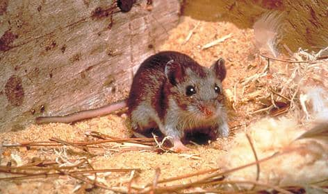
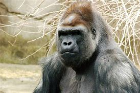
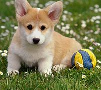
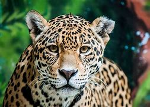

| Mouse |
Ape |
Dog |
Jaguar |

Meet the Mouse
A mouse (pl.: mice) is a small rodent.
Characteristically, mice are known to have a pointed snout, small rounded ears, a body-length scaly tail, and a high breeding rate.

Meet the Ape
Ape, (superfamily Hominoidea), any tailless primate of the families Hylobatidae (gibbons) and Hominidae
(chimpanzees, bonobos, orangutans, gorillas, and human beings).

Meet the Dog
The dog (Canis familiaris or Canis lupus familiaris ) is a domesticated descendant of the wolf.
Also called the domestic dog, it is derived from extinct gray
wolves, and the gray wolf is the dog's closest living relative.

Meet the Jaguar
The jaguar (Panthera onca) is a large cat species and the
only living member of the genus Panthera native to the Americas.